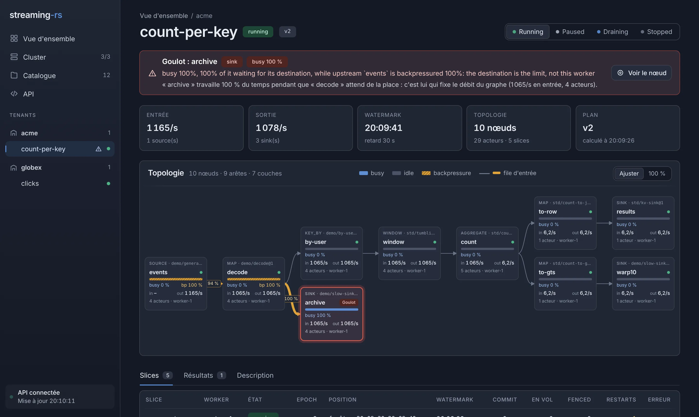

streaming-rs is a stream-processing SDK in the spirit of Flink, but smaller. Pipelines are DAGs of operators written in Rust and run as actors, with backpressure, per-node metrics, event-time windows and exactly-once state kept in a Redis-protocol store. Every line of I/O runs under deterministic simulation.
let mut g = GraphBuilder::new("acme", "count-per-key"); let events = g.source("events", Generator { partitions: 4, rate_per_sec: 2_000, }); let decoded = g.then(events, "decode", Decode); let by_user = g.then(decoded, "by-user", ByUser); let windows = g.then(by_user, "window", Tumbling::of(FIVE_MIN)); let counts = g.then(windows, "count", Count); let rows = g.then(counts, "to-row", CountToJson); g.sink(rows, "results", KvSink { retain: 400 }); g.sink(decoded, "archive", Archive); // any DAG App::new() .tenant("acme", "Acme Corporation") .graph(g) .main() // `standalone` or `worker`
Your application declares its tenants, operators and graphs in Rust, and its binary is the worker. Every worker of a cluster runs the same binary and publishes the graphs of its code into the store when it starts. Built for one first use case: a Pulsar topic, five-minute windows, a count per key, flushed to Pulsar or Warp 10.
Graphs are checked at start (acyclic, types along each edge, every configuration accepted by its operator). The API changes only what is not structure: run states, paused nodes, and the parameters an operator exposes.
An epoch is committed with a single HSETNX. No MULTI, no scripting: the protocol runs on Redis and on Clever Cloud Materia KV, which only guarantees single-command atomicity.
Every node is an actor behind a bounded edge. A full edge suspends its producer up to the source; across an aggregate, a slice stops reading once too many of its closed windows wait to be emitted.
Each actor accounts its time as busy, idle or backpressured. The control plane names the node that limits a graph, and says whether it is limited by its destination, its work or the store.
Every graph, actor, metric and key belongs to a tenant, and secrets are resolved per tenant. Workers are shared by all of them; membership is a light, re-implemented Scuttlebutt gossip.
Each graph remembers its declarations by fingerprint. While two binaries run side by side, the older one steps aside from a graph the newer one declares otherwise. No state is deleted by a deployment.
Every worker started with --listen serves the HTTP API and an embedded
web UI (in French for now). Below, the demonstration graph after the
archive sink's latency was raised to 400 ms through the API: the sink is
busy all the time waiting for its destination, backpressure has climbed to the source,
and the node is named as the graph's bottleneck.

A graph is cut at its aggregates. src.<node>.<partition> runs one
source partition up to the first aggregates; agg.<node> reads the
closed windows and runs everything downstream. A slice is the unit of placement
and of exactly-once: all slices of a graph share one worker until that worker
reports being saturated.
An operator is a structure, and the structure is its configuration.
#[derive(Operator)] names it and turns the fields marked
#[param] into parameters the API and the UI may change, with their
defaults and bounds. A field without #[param] is fixed by the code.
Then the operator says what it is: a Source, a Sink, or,
for everything else, a Transformer.
/// Synthetic events, as JSON bytes. #[derive(Debug, Clone, Operator)] #[operator("acme/generator@1")] pub struct Generator { /// Number of partitions. #[param(default = 4, min = 1, max = 64)] pub partitions: u32, /// Events per second. #[param(default = 2000, max = 200000)] pub rate_per_sec: u64, } impl Source for Generator { type Out = Vec<u8>; async fn start<P: Providers>(&self, ctx: &Context<P>, partition: u32, after: Option<Position>, out: SourcePipe<Vec<u8>>, ) -> Result<(), OpError> { let mut next = after.map_or(0, |p| p.2 + 1); loop { // Waits while downstream is full: the backpressure. out.send(Position(0, 0, next), ctx.clock.now_ms(), event(next)).await?; next += 1; } } }
impl Transformer<Vec<u8>> for Decode { type Out = Event; fn transform(&self, input: Pipe<Vec<u8>>) -> Pipe<Event> { input.filter_map(|b| serde_json::from_slice(b).ok()) } }
impl Sink<Event> for Archive { async fn start<P: Providers>(&self, ctx: &Context<P>, mut input: SinkPipe<Event>) -> Result<(), OpError> { while let Some(batch) = input.next().await { for e in batch.iter() { /* e.id, e.value */ } batch.done(); // or batch.failed("why") } Ok(()) } }
key_by gives a Pipe<Keyed<T>>, on which window gives Pipe<Windows<T>>, on which aggregate(init, add, merge) runs. A window on a pipe without a key does not compile.
The store holds a description that references operators by name (std/count@1); the code lives in the binary. The stored configuration of a node is its operator as camelCase JSON, unknown fields refused.
The catalogue carries each parameter's kind, choices and bounds. The API refuses what the operator would, its own check function included, before a change restarts the node.
Two workers may run the same slice at the same time: the store decides which one commits, so membership and placement are never needed for correctness. The protocol only relies on single-command atomicity.
HSETNX c:<epoch> holding the source position, the watermark and every accumulator the epoch changed.HSETNX succeeds for one writer only. The loser is fenced and restarts from the log. The source is acknowledged only after the commit.gcGrace, so a late write from a worker that lost the slice cannot leave a window behind.EmitId. After a failure the same elements are written again under the same ids.The same discipline covers partitions added and removed at run time (plan generations, joining and retired slices), graph deletion (logs closed first, then a resumable purge) and deployments (declarations by fingerprint). The full list of invariants is in AGENTS.md.
Everything that does I/O is generic over Moonpool's providers, so the real worker code runs under the Moonpool simulator, with crashes, a hostile store and a hostile broker. And because a simulation that passes proves little until it is known to fail, bugs are planted on purpose to measure the harness itself.
Compiled only with the mutants feature, so a production build cannot carry one. SIM_MUTANT=<name> plants a single one.
CommitWithoutFencingCommitBelowTheSealAckBeforeCommitEmitWithoutOwnership
ForgetAtOnceRestartWithoutWatermarkRestoreWithoutPendingEmptyWithoutCopy
JoinWithoutWatermarkEmitWithoutRetiredDeleteWithoutClosingRunAnotherDeclaration
DeleteByTheIndexEntryAsideByTheIndexEntryRunWhatIsBeingDeletedConfirmWithoutTheSink
CloseWithoutClaim
$ SIM_ITERATIONS=200 SIM_CONFIGS=40 cargo test --release \ -p streaming-sim --test exactly_once $ SIM_SEEDS=<seed> cargo test -p streaming-sim \ --test exactly_once <scenario> -- --nocapture $ cargo test --release -p streaming-sim \ --features mutants --test mutants -- --nocapture
cargo-mutants) measure the ordinary tests the way planted bugs measure the simulation.SIGKILL halfway, and checks the counts.| Crate | Role |
|---|---|
streaming | The SDK: App (tenants, operators, graphs, the standalone and worker commands), stock operators, the demonstration application. |
streaming-core | Contracts: ids, time, the Kv trait, the Operator, Source, Sink and Transformer traits and their pipes, the typed GraphBuilder, registry and catalogue. |
streaming-macros | #[derive(Operator)] and #[derive(Param)]. |
streaming-runtime | The engine: actors, epochs and commits, commit log and window state, worker loop, controller and placement. |
streaming-sim | The Moonpool harness and the exactly-once scenarios. |
streaming-gossip | Scuttlebutt membership, simulable. |
streaming-kv-redis | RESP client for Redis and Materia KV, with size limits and optional TLS. |
streaming-pulsar | Apache Pulsar source and sink on the Magnetar client. |
streaming-warp10 | Warp 10 sink (/api/v0/update). |
streaming-api | HTTP API (axum) and the embedded web UI: graphs, metrics, bottleneck, results, exposed parameters. |
streaming-openapi | #[route] registers a handler and derives its OpenAPI 3.2 operation from its signature, so router and document cannot diverge (macro in streaming-openapi-macros). |
Nothing is deployed in production, and the on-disk formats may still change.
The demonstration application runs three in-memory workers gossiping over loopback,
two graphs fed by a generator, and the web UI on http://127.0.0.1:8080.
Open acme / count-per-key, set the archive sink's
latencyMs to 400, and watch backpressure climb to the source
while the node is named the bottleneck.
$ git clone https://github.com/miton18/streaming-rs $ cd streaming-rs $ cargo run --release -p streaming --example demo -- standalone
$ my-app worker --id worker-1 --kv rediss://:TOKEN@kv-host:6379 \ --listen 0.0.0.0:8080 --gossip 0.0.0.0:7946 \ --gossip-advertise 10.0.0.1:7946 $ my-app worker --id worker-2 --kv rediss://:TOKEN@kv-host:6379 \ --listen 0.0.0.0:8080 --gossip 0.0.0.0:7946 \ --gossip-advertise 10.0.0.2:7946 --seeds 10.0.0.1:7946